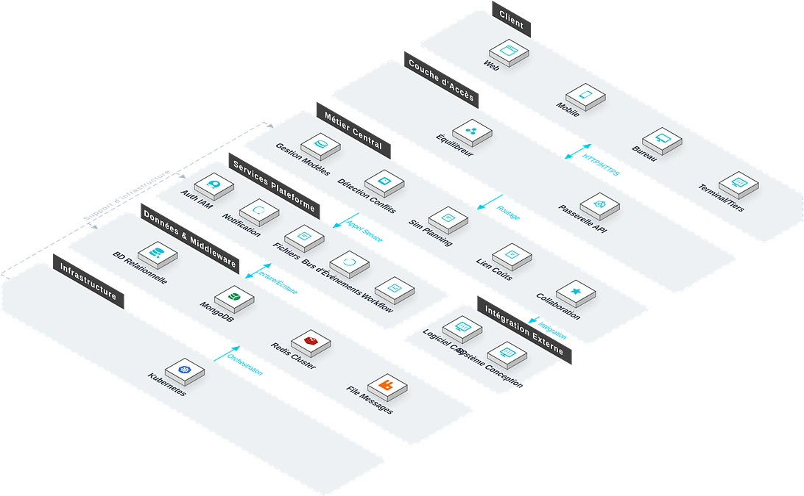

Le Système BIM Léger est une plateforme de revue collaborative permettant une navigation fluide des grands modèles BIM sur Web et mobile. Face aux chargements lents et à la latence causés par les fichiers BIM natifs volumineux, le système offre compression, navigation Web fluide, revue multi-appareils, comparaison de modèles et requête de propriétés, permettant aux modèles 3D volumineux de fonctionner efficacement sur tous les terminaux, aidant les équipes à réaliser la conception collaborative inter-régionale et la vérification précise sur site.

Caractéristiques Clés
Le système couvre six modules : allègement, navigation Web, collaboration multi-appareils, comparaison de modèles, requête de propriétés et mesure par coupe.
Allègement
Algorithmes intelligents de compression et d'optimisation géométrique pour les modèles Revit, Bentley, réduisant la taille de plus de 80%.
Navigation Web
Moteur de rendu WebGL — aucun plugin requis.
Collaboration Multi-Appareils
Visualisation et annotation synchronisées sur PC, tablette et mobile.
Comparaison de Modèles
Comparaison automatique des versions de modèles avec mise en évidence des modifications.
Requête Propriétés
Cliquez sur un composant pour voir ses propriétés techniques complètes.
Mesure par Coupe
Coupe à angle arbitraire, mesure de distance, surface et volume.
Architecture du Système
Architecture du Système

Architecture pipeline BIM léger : le plugin Revit télécharge les modèles natifs, traités par le service de conversion et stockés en object storage ; le côté Web charge et interagit en temps réel via WebGL ; la plateforme sous-jacente est basée sur des microservices .NET 8.0+ avec RabbitMQ pour les événements async.
Scénarios d'Application
Adapté à la navigation Web de grands modèles, à la revue collaborative multi-parties, à la comparaison de versions et à la vérification par coupe sur site.

Navigation Web
Compression et optimisation géométrique réduisant la taille de plus de 80%, permettant une navigation fluide sans plugin.

Revue Collaborative
Visualisation et annotation synchronisées sur PC, tablette et mobile pour collaboration inter-régionale conception/construction/maître d'ouvrage.

Comparaison de Versions
Comparaison automatique des versions avec mise en évidence des modifications, facilitant la gestion des versions.

Vérification sur Site
Coupe à angle arbitraire, mesure de distance, surface et volume pour vérification précise sur site.
Avantages et garantie
Compatibilité multi-formats
Prend en charge l’importation des formats des logiciels BIM grand public tels que Revit, Bentley, SketchUp, etc. La large compatibilité des formats de modèles permet de protéger les actifs de conception existants.
Allègement cloud
Après traitement automatisé par la chaîne de production d’allègement, les modèles sont stockés sur le cloud, accessibles globalement sans latence, permettant une collaboration multipartite interrégionale efficace et fluide.
Consultation sans plugin
Basé sur le moteur de rendu WebGL, le côté Web permet la consultation et l’interaction sans installation de plugin, réduisant considérablement la barrière à l’utilisation.
Architecture microservices
La couche inférieure est construite sur la plateforme de microservices .NET 8.0+, chaque service est déployé indépendamment et bénéficie d’une extensibilité élastique, facilitant les itérations fonctionnelles ultérieures et la maintenance du système.
Collaboration multi-terminaux
Prend en charge l’accès via plusieurs terminaux : PC Web, mobile, tableau de bord grand écran, etc. Les parties concernées (conception, chantier, supervision) partagent en temps réel la même vue de modèle.
Traçabilité des versions
L’historique des versions est automatiquement enregistré lors du téléchargement du modèle, avec prise en charge du retour et de la comparaison de n’importe quelle version historique, pour une gestion des modifications claire et maîtrisée.
Étude des besoins
Nous étudions en profondeur les besoins de collaboration des équipes de conception et des entrepreneurs, l’état actuel des formats de modèles et l’environnement réseau, pour élaborer un plan de mise en œuvre personnalisé.
Déploiement du système
Prend en charge un déploiement flexible sur cloud privé ou cloud public, s’adaptant aux besoins des projets avec différents niveaux de sécurité et conditions réseau.
Formation et mise en ligne
Nous proposons une formation différenciée pour les administrateurs et les utilisateurs finaux, couvrant le téléchargement de modèles, le traitement d’allègement, la configuration des autorisations et les opérations courantes.
Maintenance continue
Support technique distant 7j/7 et 24h/24, inspections régulières du système et itérations fonctionnelles, pour garantir la stabilité à long terme de la plateforme.
Sécurité des données
Les données des modèles sont stockées de manière chiffrée, les autorisations sont gérées par niveaux, et l’ensemble des journaux d’opérations est enregistré, prenant en charge l’audit et la traçabilité conformes aux réglementations.
Mise à niveau et extension
Prend en charge une mise à niveau fluide selon les étapes du projet, les nouveaux modules fonctionnels peuvent être mis en ligne indépendamment sans affecter le fonctionnement des activités existantes.